<div id="index">
    <!--占位-->
    <div class="header-1"></div>
    <div class="header">
        <a href="javascript:history.go(-1)"></a>
        <span class="chatname">扫一扫</span>
        
    </div>
    <div class="main">
        <div class="mask1"></div><div class="mask2"></div><div class="mask3"></div><div class="mask4"></div>
        <div class="line"></div>
        <video id="video" width="100%" height="100%" autoplay>
        </video>
        <canvas  id="canvas" width="10rem" height="10rem"></canvas>
        
    </div>
    <!--占位-->
    <div class="footer-1"></div>
    <div class="footer">
        <span class="message">
            
            <p>{{message}}</p>
        </span>
        <span class="contacts">
            
            <p>{{contacts}}</p>
        </span>
        <span class="find">
            
            <p>{{find}}</p>
        </span>
        <span class="my">
            
            <p>{{my}}</p>
        </span>
    </div>
</div>
<style>
    .but{
        position: absolute;
        z-index: 2;
        /*background: rgba(0,0,0,0.4);*/
        bottom: 26rem;
        left: 37rem;

    }
    @-webkit-keyframes flo {
        0% {
            transform: translateY(3rem);
            -ms-transform: translateY(3rem);		/* IE 9 */
            -webkit-transform: translateY(3rem);	/* Safari and Chrome */
            -o-transform: translateY(3rem);		/* Opera */
            -moz-transform: translateY(3rem);        }
        100% {
            transform: translateY(55rem);
            -ms-transform: translateY(55rem);		/* IE 9 */
            -webkit-transform: translateY(55rem);	/* Safari and Chrome */
            -o-transform: translateY(55rem);		/* Opera */
            -moz-transform: translateY(55rem);
        }
    }
    .line{
        left: 22%;
        width: 56%;
        display: block;
        position: absolute;
        height: 10px;
        background: #a0e241;
        top: 30%;
        box-shadow: 0px 0px 100px #a0e241;
        border-radius: 100px;
        animation: flo 1.5s linear 0s infinite alternate;
        -moz-animation: flo 1.5s linear 0s infinite alternate;
        -webkit-animation: flo 1.5s linear 0s infinite alternate;
        -o-animation: flo 1.5s linear 0s infinite alternate;
    }
    .mask1{
        position: absolute;
        z-index: 1;
        top:0;
        left: 0;
        width: 100%;
        height: 30%;
        background: rgba(0,0,0,0.4);
    }
    .mask2{
        position: absolute;
        z-index: 1;
        top:30%;
        left: 80%;
        width: 20%;
        height: 40%;
        background: rgba(0,0,0,0.4);
    }
    .mask3{
        position: absolute;
        z-index: 1;
        top:70%;
        left: 0%;
        width: 100%;
        height: 30%;
        background: rgba(0,0,0,0.4);
    }
    .mask4{
        position: absolute;
        z-index: 1;
        top:30%;
        left: 0%;
        width: 20%;
        height: 40%;
        background: rgba(0,0,0,0.4);
    }
    .back{
        margin-top: 1.4rem;
        width: 6rem;
        float: left;
        margin-left: 3rem;
    }
    .chatname{
        display: block;
        border-left: 2px solid #2c2b30;
        float: left;
        color: #fffeff;
        padding-left: 2rem;
        margin-left: 2rem;
    }
    .info{
        width: 6rem;
        float: right;
        margin-top: 1.4rem;
        margin-right: 3rem;
    }
</style>
